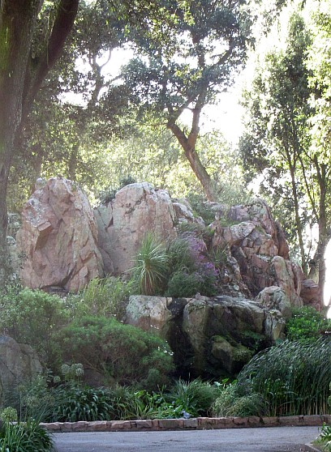

Le Ménage ès Feuvres,
St. Ouën.
Lé 27 juîn, 1970.
Moussieu l'Rédacteu,
L'histouaithe du temps passé nous raconte qué des êtres spirituels, réels ou înmaginnaithes, ont mînt l'pid à tèrre dans difféthentes parties du monde et y'ont laîssi preuve dé lus présence. Dans l'île dé Ceylan, tch'est dans La Mé Îndgienne, la montangne Adam's Peak dé sept mille, trais chent chînquante-trais pids d'haut, est r'nommée viyant qué sus l'haut rotchi tchi forme l'coupé, nou vait, êtampée, la forme du pid dé Bouddha - tch'est supposé aver 'té là. La secte des Brahmanes des Îndes nouos asseûthe qué ch'tait la forme du pid dé Siva, tch'est êtampée à. Les Mahométans r'cliâment qué ch'tait l'pid d'Adam - et cèrtains Chrêtchiens Portundgais craient qu'ch'est eune êtampe du pid d'St. Thomas, et acouo d'autres qué ch'est l'êtampe du pid dé l'euneuque dé Candace, reine d'Êthiopie! L'êtmpe est couvèrte par un abri atout un supèrbe lief, et les prêtres d'un riche monastéthe Bouddhiste en sont les gardgiens.
À La Mecque, capitale du Héjaz en Arabie et la ville sainte d'Islam, eune néthe pièrre - supposée être probabliément météorique d'originne - est fanmeuse viyant qu'l'êtampe des pids d'Abraham est d'ssus. Ch'tait sus chutte pièrre-là tch'i' sé m'ttait d'but quand il 'tait à bâti l'Kaba, lé carré templ'ye tch'est un objet d'vénéthâtion pour touos es pélérîns tchi font l'pélérinnage à La Mecque. ch'est lus ambition d'faithe chu pélérinnage au mains eune fais d'vant mouothi.
Ou-s-allez p't êt' être ravis d'ouï qu'Jèrri a 'té visité par un être tch'y laissit l'êtampe dé san pis sus un rotchi étout - et acouo pus ravis quand j'm'en vais vouos dithe qué ch'tait L'Malîn Esprit li-mème - lé Satan! Nou n'éthait pon pensé tch'il éthait prîns la peine dé s'dêrangi pour visiter un p'tit pays comme lé nôtre, ch'est en tchi i' faut supposer tch'il avait des sèrviteurs forts assez pour lé faithe ouï lus appel d'ichîn en enfer!

Dans iun des bulletîns d'L'Assembliée d'Jèrriais, L'Académicien L'Maistre nouos conte l'histouaithe du Rotchi des Chorchièrs, tchiquesfais appelé Rocque Bèr. I' nouos dit qué dans l'vaîsinné pêtcheux d'La Rocque y'avait aut'fais eune aimabl'ye et bouanne janne fille du nom d'Marguérite tch'avait un galant tchi s'appelait Hébert. Il 'tait un fort et brave janne homme mais, malheutheusement, i' n'tait pon satisfait dé m'ner sa vie trantchilement. Il 'tait hardi emporté par l's histouaithes des faîtchieaux, et mème les ségrets d'la chorchell'lie, et s'prom'nait tout seu dans l'mitan d'la niet et chèrchait les lieux hantés.
Eune niet, étant lâssé, i' s'assiévit au pid du Rotchi d'Rocque Bèr et pus tard s'endormit. Quand i' s'rêvilyit, i' restit tout êbahi d'chein tch'i' vit. Par eune lueu brillante, i' viayait des faitelles ravissantes voltilyant à l'entou d'li, et ieune sustout, ses bieaux longs g'veux à banon au gré d'la brise, l's ièrs plieins d'amour et d'eune bieauté séduisante, lé fit oublier sa Marguérite. Il en tchit en amour et lî tendit les bras. Ou lî promînt dé r'vénîn là la préchaine niet, lî dîsant qu'oulle 'tait en amour dé li étout. Là d'ssus, les fantômes dispathûdrent, et Hébert s'en r'fut siez li.
Quand, lé lendemain au matîn, les gens du vaîsinné ouïdrent pâler d'l'aventuthe à Hébert, Marguérite en eut l'vent étout, et ou l'suppliyit dé n'y'aller pon, à Rocque Bèr, lé préchain sé, mais i' n'l'êcoutit pon. I' s'mârrit et s'y'en fut la niet v'nue en faithant des juthements!
Marguérite, toute triste et les lèrmes ès yeux, sé mînt à g'nouors à prier L'Bouan Dgieu. Et pis ou s'en fut trouver l'Minnistre. I' lî d'mandit s'oulle avait la fouai et l'couothage d'aller au rotchi lyi-mème, toute seule, pour lé sauver. "Oui, j'ai la fouai!", ou lî dit, "et L'Bouan Dgieu m'n'donn'na l'couothage!"
"Eh bein, va, don, et prend chutte crouaix 'chîn auve té, et tu l'sauv'thas!, lé Minnistre lî dit.
À travèrs la néthe niet et eune tèrribl'ye tempête, Marguérite s'en fut à Rocque Bèr. Ou vit eune lueu êbliouissante et san chièr Hébert parmi un tas d'laies criatuthes faîthant lus sabbat, et dansant et heurlant san arrêt. les belles faîtelles du sé dé d'vant étaient changies en vielles et âffreuses chorchiéthes. Lé feu lus sortait des ièrs, et lus grîns m'nichaient d'dêchither l'mînséthabl'ye Hébert.
Mais, comme un êpart dé feu, tout ch'la dispathut. Dans la présence dé La Crouaix touos les dgiabl'es et les chorchiéthes fichîdrent lé camp d'un ambrôn et en faîthant des heurles tchi n'avaient qué d'touanner les sens à Marguérite, laîssant Hébert êtendu par tèrre, êvanni mais sauvé par lé pouver d'la fouai et d'l'amour.
Et i' pathaît qu'acouo d'nouos jours nou peut vaie la forme d'un chabot du Satan êtampée à certaine pliaiche sus l'Rotchi d'Rocque Bèr!
George d'La Forge
Viyiz étout: